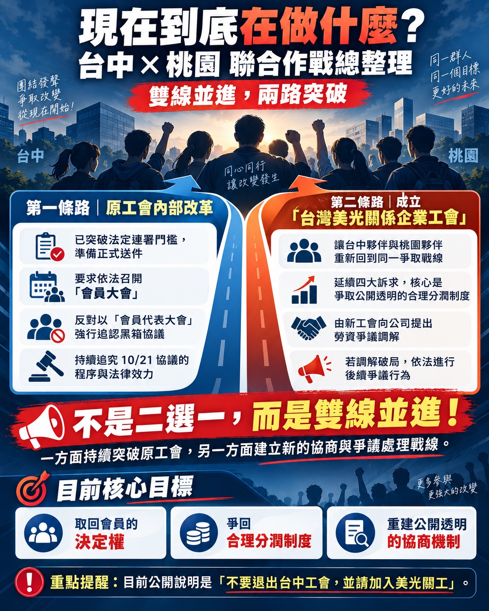

我們不生產錢，我們只是香蕉農。
以沉默記住失望，以程序守住權利。We remember our disappointment in silence, and defend our rights through due process.

關係企業工會常見問題 Q&AAffiliated Union FAQ意向書與正式連署是不同管道；請尚未填寫的同仁持續表達對公司 10/22 ATM 方案的看法，讓 11/6 桃園協調會 聽見更多台中會員的聲音。已填寫者請勿重複送出。The Google Form and formal petition are separate. If you have not yet responded, please share your views on the company's Oct 22 ATM proposal ahead of the Nov 6 Taoyuan coordination meeting. Please avoid duplicate submissions.
📣 前往 Google 意向書 ↗📣 Open the Google Form ↗正在向 Google 表單取得台中回覆總數… / Loading Google Form response count…
每 3 分鐘自動更新（頁面開啟時） · 不公開個人資料 / Auto-refresh every 3 minutes while open · No personal data
檢查統計連線 / Check count service ↗11/3（二）下午記者會與晚上關工說明會開放報名，請在表單分別勾選參加意願，也可提出相關問題。Register separately for the Nov 3 afternoon press conference and evening union briefing using the form. You can also submit questions.
📍 下午記者會｜11/3（二）13:00
台中科管局門口（科雅路旗桿處）；地址：臺中市西屯區林厝里中科路 2 號。請於 13:00 前報到領取物資。可停中科管理局地下停車場。
Press conference: Tue, Nov 3 at 13:00, outside the Central Taiwan Science Park Bureau (flagpole area on Keya Road), No. 2, Zhongke Rd., Xitun Dist., Taichung. Check in before 13:00. Underground parking is available.
🌙 晚上關工說明會｜11/3（二）・后里
統計報名人數至 11/1（日）中午，再以簡訊通知確切時間與地點。歡迎台中、台南、銅鑼夥伴參加；無法到場者也可在表單勾選希望續辦或提供影片，並留下問題。
Evening union briefing: Nov 3 in Houli. Attendance is being counted until noon on Nov 1; the exact time and venue will be sent by SMS. If you cannot attend, use the form to request another session or a video and submit questions.
正在同步人數… / Syncing counts…
報名 11/3 記者會／說明會 ↗Register for Nov 3 events ↗有意願加入的同仁，可前往工會網站閱讀申請書；入會資格與程序請依該工會說明為準。Review the application and the union’s membership eligibility and procedures on its website.
申請資料筆數，尚非核准會員數。 / Application records, not approved members.
正在同步人數… / Syncing counts…
LINE 群組已擴充為 10,000 人大群，目前已重新開放入群審核，歡迎同仁申請加入。Our LINE group has expanded to a 10,000-member capacity, and membership approvals are now open again. Members are welcome to apply to join.
加入 LINE 群組 ↗Join the LINE group ↗整理完有效連署後，預計 10/30 正式向台中工會提出召集臨時會員大會的請求；若依法定期限未召集，將視情況向主管機關申請指定召集人。Following verification, a formal request to convene an extraordinary union meeting is planned for Oct 30. If no lawful convening occurs within the required period, the requesters may seek an authority-designated convener.
查看完整後續時間軸 ↓See the full timeline ↓召集時間、地點與議程尚未正式公告。The meeting date, venue, and agenda have not been announced.
希望承擔幹部／代表工作，和願意提供專長或時間協助的志工，請依不同管道登記。
可選擇匿名或具名，勾選設計、活動、資料、翻譯、溝通等能幫忙的項目。
連署不是終點，而是正式行動的開始。請大家持續關注並共同參與！This is not the end — it is the start of our collective action. Please stay informed and involved!
依先前公告規劃暫停新的正式連署收件，進行移除重複連署書、核對及建檔，準備正式送件。此為流程時點，不代表網站後端已自動停止接收。Based on the announced schedule, new formal petition submissions are to pause at 21:00. The next stage is deduplication, verification, and record preparation. Removing the link does not automatically disable the submission backend.
待連署資料完成核對，正式提出召集臨時會員大會之請求，啟動相關法定程序；實際送件以公告為準。After verifying the submissions, formally request an extraordinary union members’ meeting and start the relevant legal procedures. The actual submission will be confirmed by announcement.
邀請尚未填寫的會員持續表達真實立場，讓 11/6 桃園協調會 聽見更多台中會員的聲音。已填者請勿重複提交。If you have not yet responded, please share your genuine views so the Nov 6 Taoyuan coordination meeting can hear more voices from Taichung. Please avoid duplicates.
擴大自救團隊，為後續會員大會及相關行動準備；無論匿名或具名，都歡迎加入協助。Help expand the action team and prepare for the members’ meeting. Both anonymous and named volunteer applications are welcome.
下午 13:00 台中科管局記者會，請提前報到；晚上移至后里舉行美光關係企業工會說明會。晚場人數統計至 11/1（日）中午，確切時間與地點將以簡訊通知報名者，歡迎台中、台南、銅鑼夥伴參與。A 13:00 press conference at the Central Taiwan Science Park Bureau is followed by an evening affiliated union briefing in Houli. Please arrive before 13:00 to check in. Evening attendance is being counted until noon on Nov 1; registered participants will receive the exact time and venue by SMS. Colleagues from Taichung, Tainan and Tongluo are welcome.
工會收到正式請求後，應依相關法令於十日內辦理召集。若屆期未依法召集，原請求人將依法向主管機關申請指定召集人；11/9 為預定追蹤日期，請以實際送達日與法定期限確認。After receipt of a valid formal request, the union must follow the legal 10-day convening requirement. If the meeting is not lawfully convened by the applicable deadline, the original requesters may apply to the competent authority for a designated convener. Nov 9 is a planned follow-up date; the actual deadline depends on service of the request.
《工會法》第 23 條：會員五分之一以上，或會員代表三分之一以上，可請求理事長召開臨時會員（代表）大會；監事也可請求。通常須提前三日通知，緊急事故得於會前一日通知。Under Article 23 of the Labor Union Act, at least one-fifth of members or one-third of delegates may request the chairperson to convene an extraordinary meeting; supervisors may also request one. Notice is generally required three days in advance, or one day in urgent circumstances.
若理事長自請求日起十日內不召集，原請求人得依第 25 條申請主管機關指定召集。連署人數須按有資格的會員總數計算。If the chairperson does not convene the meeting within ten days of the request, the original requesters may apply under Article 25 for the authority to designate a convener. Valid signatures must be counted against eligible membership.
第一步是確認 10/21 文件究竟屬於正式「團體協約」、一般勞資協議或調解紀錄，並取得全文及工會章程。First determine whether the October 21 document is a collective agreement, an ordinary labor-management agreement, or a mediation record, and obtain its full text and the union bylaws.
若屬正式團體協約，《團體協約法》第 9 條規定，除依章程簽訂外，須符合會員（代表）大會法定決議或全體會員書面同意方式；未符合者於補行追認前不生效力。不能僅憑「未開會員大會」便直接斷定無效，因條文有章程及書面同意途徑。If it is a formal collective agreement, Article 9 of the Collective Agreement Act allows procedures specified in the bylaws, a legally required members’ or delegates’ resolution, or written approval by all members. An agreement that does not satisfy the relevant requirements does not take effect before ratification. The lack of a members’ meeting alone does not prove invalidity because other routes may apply.
會員大會可提出不予追認、要求公開協議與重新協商的提案，但對外效力仍要依法及個案事實確認。A members’ meeting may propose non-ratification, disclosure, or renewed negotiations; the effect outside the union depends on the applicable law and case facts.
《工會法》第 26 條將解任規定列為會員（代表）大會議決事項。依第 27 條，會員（代表）大會原則上須過半數出席才能開會；涉及第 26 條第 1 至 5 款事項，須Article 26 of the Labor Union Act lists removal among matters for the members’ or delegates’ meeting. Under Article 27, the meeting generally needs more than half of members or delegates in attendance. For matters in Article 26(1)–(5), the vote requires 出席會員（代表）三分之二以上同意at least two-thirds of those attending，不是全體會員三分之二。—not two-thirds of the entire membership.
解任對象、提案、投票及補選方式仍須核對工會章程、選任解任規定，勿在未確認前宣稱職務已被解除。Check the bylaws and election/removal rules for motions, voting, and replacement elections. Do not announce a removal before it has lawfully occurred.
原始指引將紙本委託書直接納入出席數，但這不能直接當作通則；須核對適用法令、組織形式及章程，確認是否可委託、如何計票及是否採會員代表制。The earlier guide automatically counted paper proxies as attendance, but that is not a general rule. Verify applicable law, organizational structure, and bylaws before accepting proxies or counting votes.
建議由具勞動法經驗的律師或主管機關協助事先審查會議議程與程序。Ask an employment-law attorney or the competent authority to review the proposed meeting agenda and procedures beforehand.
送交主管機關的文件、期限與通知資方的方式，應依實際決議事項及適用規定辦理，不能一概認定「會後十五日內全部備查」。Filing documents, deadlines, and employer notifications depend on the specific decision and applicable rules; do not assume every document must be filed within 15 days.
可向台中市勞工局或勞動部詢問工會會議召集、章程及團體協約爭議；是否可申請調解、裁決或提起訴訟，須依爭議類型判斷。雇主若因正當工會活動給予不利待遇，可能涉及《工會法》第 35 條。Ask the Taichung City Labor Affairs Bureau or Ministry of Labor about meeting procedures, bylaws, and collective-agreement disputes. Whether mediation, unfair-labor-practice adjudication, or litigation is available depends on the type of dispute. Adverse treatment by an employer for lawful union activity may implicate Article 35 of the Labor Union Act.
官方法條：Official legislation:《工會法》Labor Union Act、《團體協約法》Collective Agreement Act。可洽You may contact勞動部Ministry of Labor或or台中市勞工局Taichung City Labor Affairs Bureau。
確認全文、法律性質、生效條件。Obtain the full text and verify its legal character and effective date.
確認授權、召集、投票與解任程序。Check authorization, meeting notices, voting, and removal procedures.
依法計算請求與開會門檻。Calculate petition and quorum thresholds under the applicable rules.
等待具召集權者的正式通知。Wait for an official notice from an authorized convener.
已完成項目集中於此，未來持續新增階段成果。Completed milestones will be archived here.
階段性收件里程碑；預計有效連署書 2,596 份、法定五分之一門檻 2,239 人，仍以正式最終確認為準。Collection milestone; estimated valid petitions 2,596, one-fifth threshold 2,239, subject to final confirmation.
為避免志工資料誤送或公開，正式申請前必須由管理員將附檔中的 Google Apps Script 部署至指定試算表，並在本檔設定 VOLUNTEER_WEBAPP_URL。
以下為表單欄位預覽，未串接期間不開放資料提交。
匿名志工不必提供姓名或工號；若留下聯絡方式則可能被識別。具名志工需填姓名及聯絡方式。